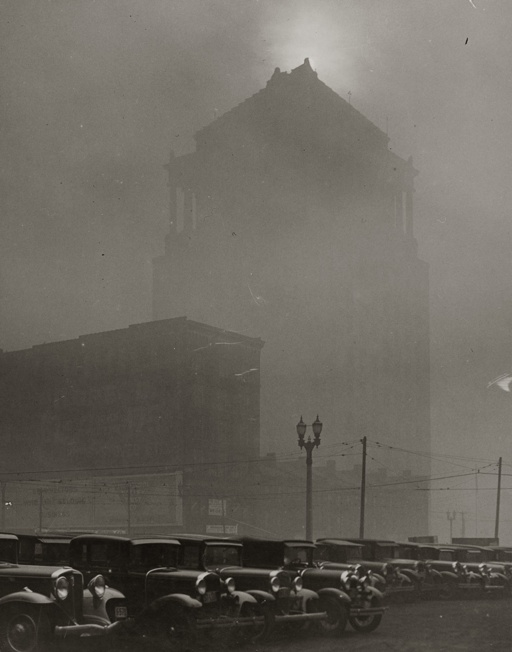

From the early 20th century until the late 1930s, Saint Louis—like London—was infamous for its smog. It sometimes limited visibility so much that streetlights and automobile headlights had to be used during the daytime. The thick gray smoke was caused by the burning of coal to heat and power homes, businesses, and transportation.
In 1918, John Moritz, the head gardener of Saint Louis's Forest Park, converted one of the park's utilitarian greenhouses into a public showcase for hardy plants that could survive in a city cloaked by smog. This greenhouse was the prototype for the later Saint Louis Floral Conservancy, known as the Jewel Box.
Postcard of the Jewel Box, c. 1930-1945

Saint Louis Civil Courts building at midday, 1939
Built by the City of Saint Louis in Forest Park in 1936, the Jewel Box received funding from the federal Public Works Administration. Its Art Deco design is defined by 50-foot-high walls to allow for maximum light and a stepped composition roof to prevent hailstorm damage.
In the mid-century, the greenhouse became known for seasonal floral displays that attracted thousands of visitors. Tennessee Williams frequented the Jewel Box and referenced it in his semi-autobiographical play The Glass Menagerie (1944).
Now listed on the National Historic Register, the Jewel Box underwent a major renovation in 2002 to reopen for public visitation and private events.
Website by Alik. For any questions please email
mollyandalik@gmail.com.